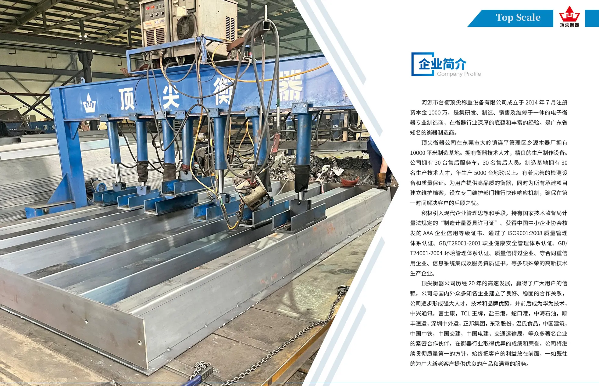
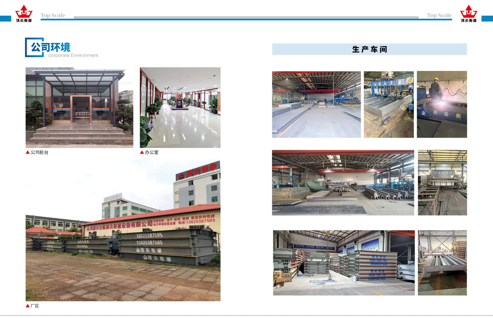
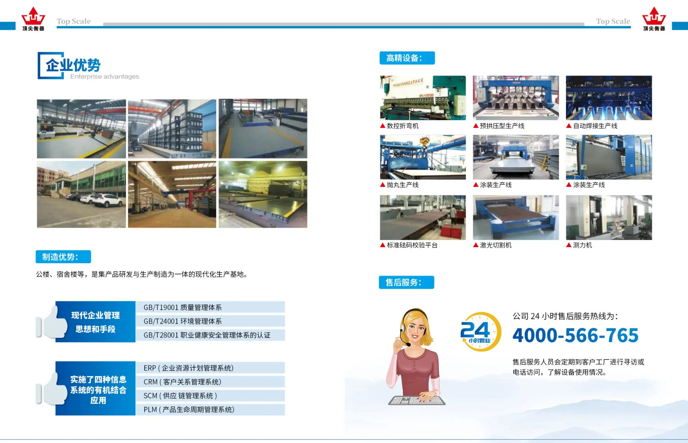
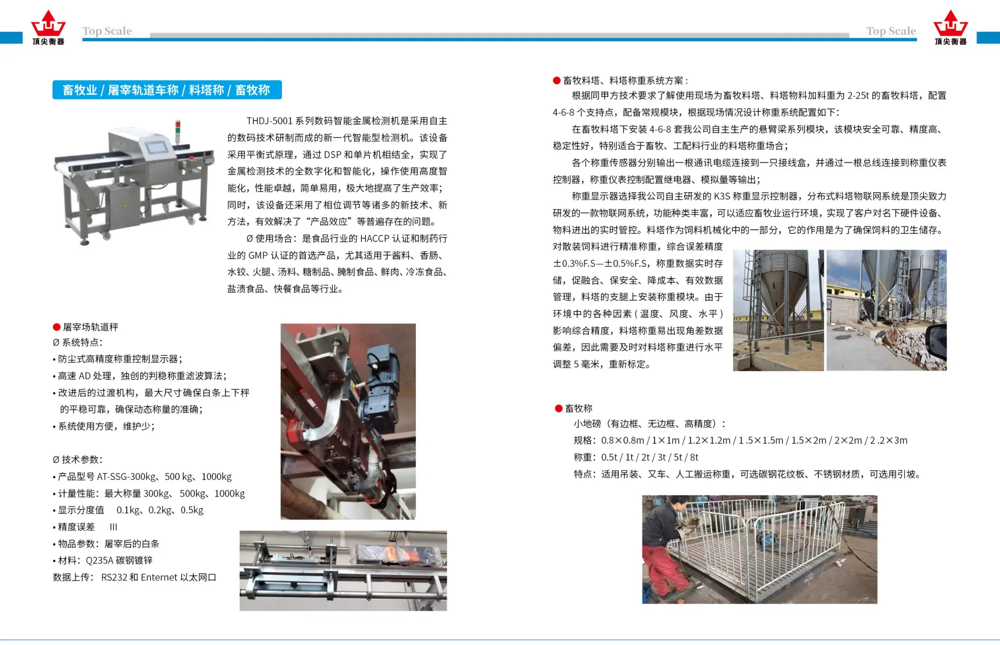
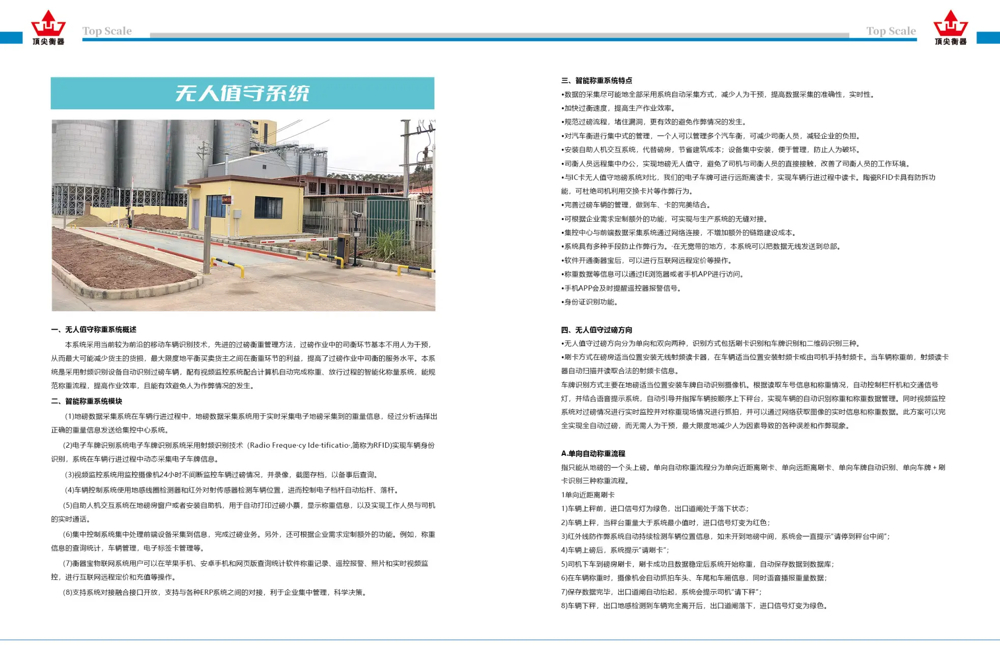
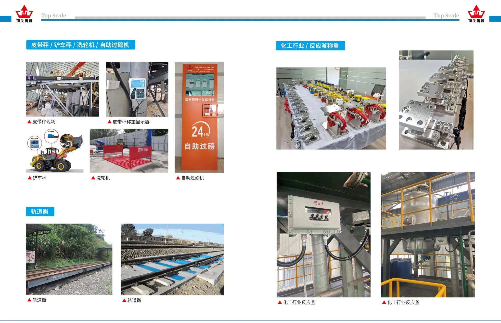

产品与技术画册
公司画册与联系方式
 打开大图查看参数
打开大图查看参数画册目录
 打开大图查看参数
打开大图查看参数企业简介
河源市台衡顶尖称重设备有限公司成立于 2014 年 7 月。本页介绍企业沿革、称重设备制造业务和生产基地。

打开大图查看参数公司环境与生产车间
浏览公司正门、办公区、厂区、秤台加工与焊接车间实拍。

打开大图查看参数公司资质与荣誉
查看画册收录的证书与荣誉图片，放大跨页可阅读证书细节。
 打开大图查看参数
打开大图查看参数资质证书展示
资质展示续页，集中陈列企业证书和质量管理相关资料。
 打开大图查看参数
打开大图查看参数制造能力与售后服务
了解生产管理、加工设备、生产线及售后服务。售后服务热线为 4000-566-765。

打开大图查看参数出口分体式汽车衡与传感器
SCS 系列提供 20、30、50、60、80、100、120 和 150 吨量程。查看型号对照、安装方式、应用场景与称重传感器参数。
 打开大图查看参数
打开大图查看参数称重模块与通行配件
查看各类称重模块，以及读卡器、车牌识别设备、摄像装置与红绿灯的图片和参数。
 打开大图查看参数
打开大图查看参数称重仪表、打印机与小地磅
对照仪表、打印机及小地磅的产品说明，查阅台面尺寸、量程及可选不锈钢材质。
 打开大图查看参数
打开大图查看参数畜牧称重、料塔与屠宰轨道秤
介绍屠宰轨道秤、料塔称重系统及牲畜秤的适用场景，并展示设备及安装现场。

打开大图查看参数一卡通称重与装车管理系统
按示意图了解车辆进场、自动称重、装料、复称和放行之间的衔接，以及散装和定量装料设备。
 打开大图查看参数
打开大图查看参数无人值守系统
结合现场图片，了解无人值守地磅的系统组成、车辆过磅流程和管理功能。

打开大图查看参数无人值守系统配置
查阅无人值守系统的配套功能和布局示意，了解车辆识别、现场显示与通行控制设备之间的关系。
 打开大图查看参数
打开大图查看参数皮带秤、叉车秤、轨道衡与反应釜称重
浏览输送、搬运、轨道车辆和化工容器称重设备实拍，以及洗轮机和自助称重终端的现场应用。

打开大图查看参数智慧搅拌站与部分客户案例
了解智慧搅拌站的系统功能和适用范围，查看企业画册列举的客户案例。
 打开大图查看参数
打开大图查看参数